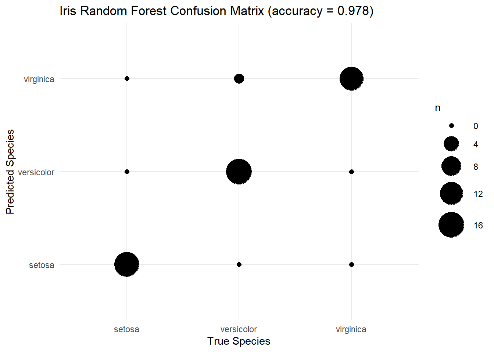

library(reticulate)
use_condaenv("r-ml", required = TRUE)
library(dplyr)
library(tidyr)
library(ggplot2)Problem4
##(a)
data(iris)
n <- nrow(iris)
train_idx <- sample(seq_len(n), size = floor(0.7 * n))
train <- iris[train_idx, ]
test <- iris[-train_idx, ]
write.csv(train, "train.csv", row.names = FALSE)
write.csv(test, "test.csv", row.names = FALSE)
head(train) Sepal.Length Sepal.Width Petal.Length Petal.Width Species
149 6.2 3.4 5.4 2.3 virginica
122 5.6 2.8 4.9 2.0 virginica
43 4.4 3.2 1.3 0.2 setosa
58 4.9 2.4 3.3 1.0 versicolor
24 5.1 3.3 1.7 0.5 setosa
4 4.6 3.1 1.5 0.2 setosa##(b)
import pandas as pd
from sklearn.ensemble import RandomForestClassifier
from sklearn.metrics import confusion_matrix, accuracy_score
train = pd.read_csv("train.csv")
test = pd.read_csv("test.csv")
X_train = train.drop(columns=["Species"])
y_train = train["Species"]
X_test = test.drop(columns=["Species"])
y_test = test["Species"]
rf = RandomForestClassifier(
n_estimators = 200,
random_state = 123
)
rf.fit(X_train, y_train)RandomForestClassifier(n_estimators=200, random_state=123)In a Jupyter environment, please rerun this cell to show the HTML representation or trust the notebook.
On GitHub, the HTML representation is unable to render, please try loading this page with nbviewer.org.
Parameters
| n_estimators | 200 | |
| criterion | 'gini' | |
| max_depth | None | |
| min_samples_split | 2 | |
| min_samples_leaf | 1 | |
| min_weight_fraction_leaf | 0.0 | |
| max_features | 'sqrt' | |
| max_leaf_nodes | None | |
| min_impurity_decrease | 0.0 | |
| bootstrap | True | |
| oob_score | False | |
| n_jobs | None | |
| random_state | 123 | |
| verbose | 0 | |
| warm_start | False | |
| class_weight | None | |
| ccp_alpha | 0.0 | |
| max_samples | None | |
| monotonic_cst | None |
y_pred = rf.predict(X_test)
cm = confusion_matrix(y_test, y_pred)
acc = accuracy_score(y_test, y_pred)
cm, acc(array([[15, 0, 0],
[ 0, 16, 1],
[ 0, 0, 13]]), 0.9777777777777777)##(C)
library(reticulate)
library(dplyr)
library(tidyr)
library(ggplot2)
cm <- py$cm
acc <- py$acc
cm [,1] [,2] [,3]
[1,] 15 0 0
[2,] 0 16 1
[3,] 0 0 13acc[1] 0.9777778species_levels <- levels(iris$Species)
cm_df <- as.data.frame(cm)
colnames(cm_df) <- species_levels
cm_df$truth <- species_levels
cm_df setosa versicolor virginica truth
1 15 0 0 setosa
2 0 16 1 versicolor
3 0 0 13 virginicacm_long <- cm_df |>
pivot_longer(
cols = all_of(species_levels),
names_to = "pred",
values_to = "n"
)
ggplot(cm_long, aes(x = truth, y = pred, size = n)) +
geom_point() +
scale_size_continuous(range = c(2, 12)) +
theme_minimal() +
labs(
title = sprintf(
"Iris Random Forest Confusion Matrix (accuracy = %.3f)",
acc
),
x = "True Species",
y = "Predicted Species"
)
##(d)
sessionInfo()R version 4.2.3 (2023-03-15 ucrt)
Platform: x86_64-w64-mingw32/x64 (64-bit)
Running under: Windows 10 x64 (build 26200)
Matrix products: default
locale:
[1] LC_COLLATE=Korean_Korea.utf8 LC_CTYPE=Korean_Korea.utf8
[3] LC_MONETARY=Korean_Korea.utf8 LC_NUMERIC=C
[5] LC_TIME=Korean_Korea.utf8
attached base packages:
[1] stats graphics grDevices utils datasets methods base
other attached packages:
[1] ggplot2_3.5.2 tidyr_1.3.1 dplyr_1.1.4 reticulate_1.44.1
loaded via a namespace (and not attached):
[1] Rcpp_1.0.12 RColorBrewer_1.1-3 compiler_4.2.3 pillar_1.11.0
[5] tools_4.2.3 digest_0.6.33 jsonlite_2.0.0 evaluate_1.0.4
[9] lifecycle_1.0.4 tibble_3.2.1 gtable_0.3.6 lattice_0.22-7
[13] pkgconfig_2.0.3 png_0.1-8 rlang_1.1.6 Matrix_1.5-3
[17] cli_3.6.5 rstudioapi_0.17.1 yaml_2.3.7 xfun_0.52
[21] fastmap_1.1.1 withr_3.0.2 knitr_1.50 generics_0.1.4
[25] vctrs_0.6.5 htmlwidgets_1.6.4 rappdirs_0.3.3 grid_4.2.3
[29] tidyselect_1.2.1 glue_1.8.0 R6_2.6.1 rmarkdown_2.29
[33] farver_2.1.2 purrr_1.0.4 magrittr_2.0.3 scales_1.4.0
[37] htmltools_0.5.8.1 dichromat_2.0-0.1 labeling_0.4.3